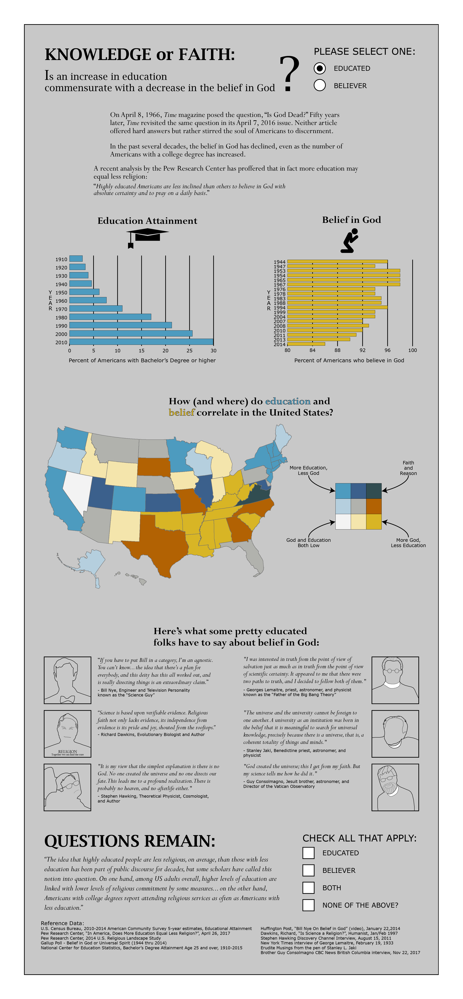

Philosopher. Cartographer. Judoka.
My more recent background may be GIS, but my first academic and spiritual passion was - and remains - my Catholic faith. I have always been fascinated by the commonly-held position that having knowledge (i.e. education) precludes the profession of a devouth faith (whatever the religion). As my background includes degrees in both geography and philosophy, I relish exploring the intersection of these subjects.
This infographic presents a story that seeks neither to refute nor endorse the premise of faith and reason being mutually exclusive. Rather, it presents a bit of evidence on both sides of the debate... and, I think, still leaves the question unresolved. Which is a welcome conclusion, as it begs us to keep asking the important questions. This effort involved the compilation of data from the U.S. Census Bureau, the Pew Research Center, Gallup, and the National Center for Education Statistics. Initial mapping and analysis was performed in ArcGIS and the final product was polished in Adobe Illustrator.
